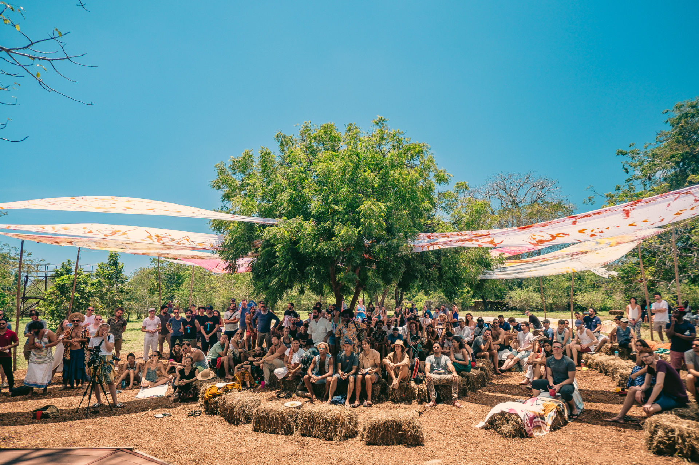

Sandbox Summit 2019 - European chapter
July 24-28 2019, Spain
4 Days of nature, workshops and discovery
We will be hosted in Wakana, which is situated next to the La Palapa lake.
You can expect beautiful nature and wonderful food.
We will be hosted in Wakana, which is situated next to the La Palapa lake.
You can expect beautiful nature and wonderful food.